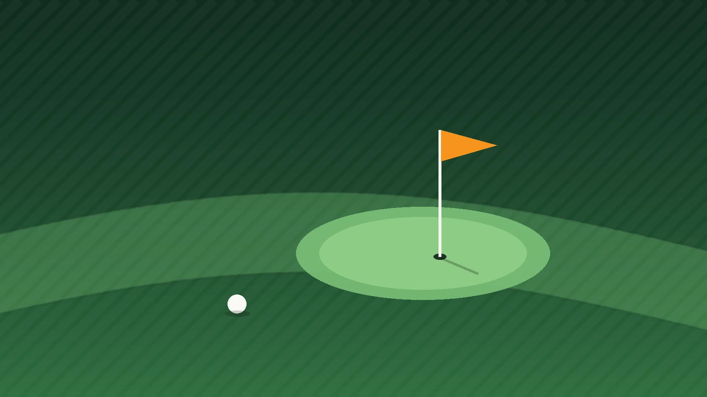

대한파크골프협회에 등록된 회원은 2020년 4만 5,478명에서 2025년 22만 9,757명으로 늘었습니다. 5년 만에 5배입니다. 같은 기간 전국 파크골프장은 254곳에서 552곳으로 두 배가 됐습니다. 그런데 2026년 6월, 등록 회원 수는 23만 명대에서 더 움직이지 않고 있습니다. 한국 레저 시장에서 가장 빠르게 자란 종목이 처음으로 숨을 고르는 장면입니다.

핵심 데이터 한눈에
5년 만에 5배, 그리고 멈췄다
파크골프의 성장 곡선은 한국 생활체육 역사에서 보기 드문 모양입니다. 국무조정실이 2025년 1월 공개한 자료를 보면 협회 회원은 2020년 4.5만 명, 2022년 10.6만 명, 2024년 18.4만 명으로 해마다 계단을 올랐습니다. 2025년에는 23만 명에 이르렀습니다. 협회에 등록하지 않은 동호인과 주말 이용자를 합치면 실제 이용 인구는 60만 명을 넘고, 업계 일부는 100만 명 시대가 코앞이라고 말합니다.
그 곡선이 2026년 상반기에 평평해졌습니다. 한국프로파크골프협회 전영창 수석부회장은 6월 10일 기고에서 "2026년 6월 현재 등록 회원 수는 23만 명대에서 정체"되고 있다고 진단했습니다. 인구 구조를 보면 이상한 일입니다. 파크골프의 주력인 60대 이상 인구는 계속 늘고 있고, 은퇴한 5060 세대가 새로 유입될 여지도 여전히 큽니다. 수요가 마른 것이 아니라, 수요를 받아낼 공급의 형태가 한계에 닿은 것입니다.
무료 공공 구장 모델이 부딪힌 세 개의 벽
한국 파크골프는 지방자치단체가 하천 둔치나 공원에 구장을 만들고 주민에게 무료 또는 소액으로 개방하는 방식으로 자랐습니다. 빠른 보급에는 최선의 방식이었습니다. 그러나 이용자가 수십만 명 규모가 되자 이 모델은 세 가지 문제를 동시에 드러내고 있습니다.
좋은 시간대는 예약이 안 된다
무료 구장은 수요를 가격으로 조절할 수 없습니다. 오전 시간대는 늘 포화 상태이고, 특정 단체가 코스를 사실상 독점한다는 논란이 여러 지역에서 반복되고 있습니다.
하천변 입지의 한계
둔치 구장은 장마마다 침수됩니다. 성남 탄천변에서는 매년 침수 피해를 입는 자리에 구장을 추가하려다 반발에 부딪혔고, 대구와 경북의 낙동강 유역에서는 점용 허가 없이 조성한 구장이 원상복구 명령을 받았습니다.
공공 공간을 둘러싼 갈등
대구 금호강변에서는 펜스 설치와 출입 제한이 조깅과 산책 이용자와 충돌했습니다. 광주 금당산에서는 보전녹지에 무허가로 7,213㎡ 규모 구장이 조성돼 문제가 됐습니다. 파크골프장은 이제 지역 정치의 쟁점이 됐습니다.
공급 계획도 말과 실행 사이 간격이 큽니다. 서울시는 2024년 6월 "2026년까지 파크골프장 77곳, 700홀"을 내놓았지만 부지 확보부터 막혀 실현은 요원하다는 평가를 받습니다. 정치적 수요는 넘치는데, 조성 이후의 운영과 관리에 대한 답은 어디에도 없습니다. 더 많은 무료 구장을 짓는 방식으로는 다음 23만 명을 받아낼 수 없다는 것이 올해 상반기 데이터가 말하는 바입니다.
일본이 먼저 걸어간 길
파크골프의 발상지 일본은 참고할 선례이자 경고입니다. 일본은 1983년 홋카이도에서 시작해 전국 대중화에 성공했습니다. 그러나 전영창 수석부회장의 표현을 빌리면 일본 파크골프는 "고령층의 소일거리라는 틀에 갇혀" 프로 스포츠화와 고급 민간 모델 개발에는 실패했습니다. 시장은 커졌지만 산업은 되지 못한 것입니다.
한국은 지금 그 갈림길에 서 있습니다. 인구가 23만 명에서 멈춘 채 무료 생활체육으로 남을 것인지, 아니면 유료 민간 구장과 회원 모델, 용품과 대회 산업을 갖춘 레저 시장으로 넘어갈 것인지가 앞으로 2~3년 안에 결정됩니다.
다음 성장은 민간에서 나온다
변화의 신호는 이미 시장 곳곳에 있습니다. 경기 포천에서는 프로 리그를 겨냥해 규격과 시설, 서비스를 앞세운 민간 구장이 추진되고 있습니다. 용품 시장은 더 빠릅니다. 신세계라이브쇼핑이 3월 말 업계 처음으로 내놓은 파크골프화는 목표 대비 180%를 팔았고, 올포유와 마운티아 같은 골프웨어 브랜드가 전용 라인을 늘리고 있습니다. 돈을 내고 더 좋은 환경에서 치겠다는 수요가 확인된 셈입니다.
민간 파크골프장이 공공 구장과 경쟁하는 지점은 가격이 아니라 확실한 예약, 좋은 잔디, 클럽하우스와 식음, 그리고 함께 치는 사람들의 커뮤니티입니다. 골프장 회원권이 그린피 할인이 아니라 부킹 보장과 소속감으로 팔리는 것과 같은 구조입니다. 여기에 대중제 골프장이나 리조트가 부지 안에 파크골프장을 함께 두면, 부부와 3대 가족이 한 리조트에서 각자의 종목을 즐기는 체류형 상품이 됩니다. 파크골프는 그 자체로도 시장이지만, 기존 골프장과 콘도의 비수기와 유휴 시간을 채우는 결합 상품으로서 가치가 더 큽니다.
씨유레저가 보는 파크골프 회원모집
최근 씨유레저에는 파크골프장 회원모집에 대한 문의가 눈에 띄게 늘고 있습니다. 부지를 가진 지역 사업자, 파크골프장을 병설하려는 골프장과 리조트, 기존 구장을 유료 회원제로 전환하려는 운영자까지 문의의 주체도 다양합니다. 공통 질문은 하나입니다. 이 지역에서, 이 규모로, 회원을 유료로 모집하는 것이 성립하는가입니다.
씨유레저 채수용 대표는 파크골프 회원모집이 골프 회원권 분양과는 문법이 다르다고 봅니다. 객단가는 낮고 이용 빈도는 훨씬 높습니다. 회원의 연령대와 거주 반경은 좁고, 무엇보다 바로 옆에 무료 공공 구장이라는 대체재가 있습니다. 골프 회원권의 논리를 그대로 가져오면 실패한다는 것이 채 대표의 판단입니다. 그래서 씨유레저는 파크골프 회원모집 검토를 다음 네 가지 타당성 질문에서 시작합니다.
- 1상권 반경 안의 실제 파크골프 인구협회 등록 회원과 비등록 동호인, 인근 공공 구장 이용 실적으로 차로 30분 안의 잠재 회원 규모를 추정합니다.
- 2공공 구장 대비 지불 의사인근 무료 구장의 예약 포화도와 시설 수준을 조사해, 회원이 연회비를 내고 옮겨올 이유가 실제로 있는지 확인합니다.
- 3적정 회원 수와 연회비 구조홀 수와 회전율로 수용 가능한 회원 수를 계산하고, 운영비를 감당하면서도 공공 구장 대비 심리적 저항선을 넘지 않는 가격대를 잡습니다.
- 4골프장과 리조트와의 결합 효과병설형이라면 골프 회원과 콘도 회원의 교차 이용률, 비수기 매출 기여, 가족 단위 유입 효과를 함께 계산합니다.
채수용 대표는 파크골프 시장이 지금 무료 생활체육에서 유료 레저 상품으로 넘어가는 문턱에 서 있고, 이 전환기의 회원모집은 판매가 아니라 타당성 검증에서 승부가 난다고 봅니다. 골프와 리조트 회원모집에서 쌓은 수요 추정과 가격 설계 경험을 파크골프에 그대로 적용할 수 있는 회사는 국내에 많지 않다는 것이 씨유레저의 판단입니다.
채수용, ㈜씨유레저 대표이사23만 명에서 멈춘 숫자는 파크골프의 끝이 아니라 첫 번째 성장 방식의 끝입니다. 다음 성장은 누가 유료로 낼 만한 파크골프 경험을 설계하고, 그 수요를 정확히 읽어 회원을 모으느냐에 달려 있습니다.
파크골프장 회원모집의 타당성 검토나 골프장, 리조트와의 결합 상품 설계를 검토 중이시라면 (주)씨유레저로 문의 가능합니다.